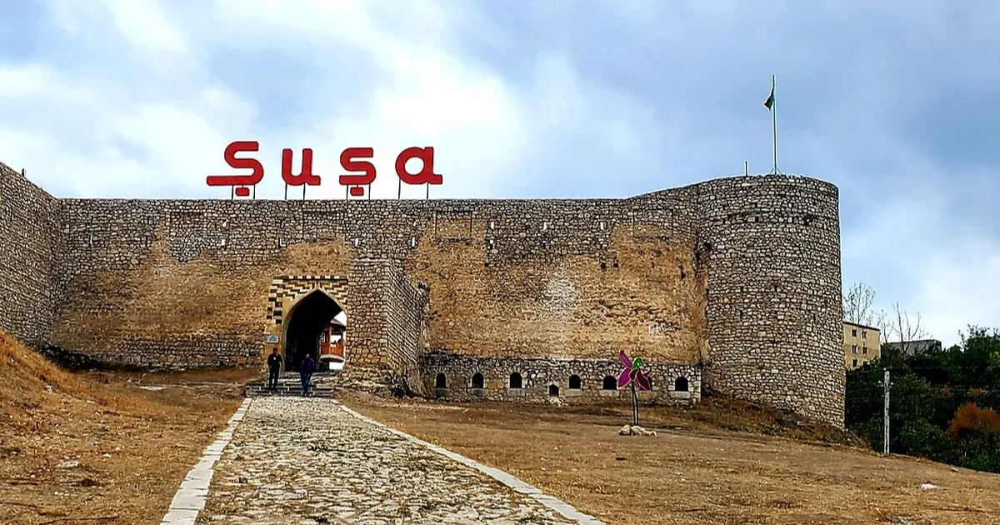
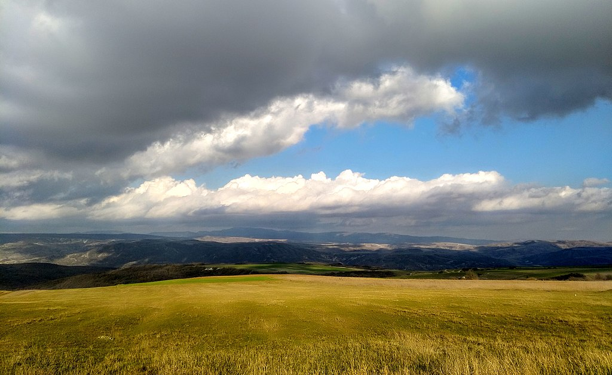

Azerbaycan, Güney Kafkasya’da yer alan ve tarihi, kültürel ve stratejik önemiyle öne çıkan bağımsız bir Türk devletidir. Kuzeyde Rusya, kuzeybatıda Gürcistan, batıda Ermenistan, güneyde İran ve doğuda Hazar Denizi ile çevrilidir. Başkenti Bakü, aynı zamanda ülkenin en büyük şehri ve ekonomik merkezidir. 10 milyondan fazla nüfusa sahip olan Azerbaycan, etnik olarak büyük ölçüde Azerbaycan Türklerinden oluşur. Ülke, zengin petrol ve doğalgaz kaynaklarıyla tanınmakta olup bu kaynaklar ekonomisinin temel taşlarından birini oluşturur. Özellikle Hazar Denizi'ndeki enerji yatakları sayesinde bölgesel ve küresel enerji projelerinde önemli bir rol üstlenmiştir. Bunun yanı sıra tarım, sanayi, bilgi teknolojileri ve turizm de gelişmekte olan sektörlerdendir. Azerbaycan’ın tarihi, binlerce yıl öncesine uzanır. İpek Yolu üzerinde yer alması sayesinde farklı medeniyetlere ev sahipliği yapmış ve zengin bir kültürel miras oluşturmuştur. Ülkede çok sayıda tarihi eser, antik kent kalıntıları ve mimari yapılar bulunmaktadır. Şirvanşahlar Sarayı, Kız Kalesi, Gobustan Kaya Resimleri ve İçeri Şehir UNESCO Dünya Mirası listesine girmiş önemli yapılardandır. Kültürel açıdan da oldukça zengin olan Azerbaycan’da müzik, edebiyat ve mutfak kültürü ön plandadır. Geleneksel mugam müziği, halı dokumacılığı, Nevruz bayramı kutlamaları ve misafirperverliğiyle tanınan halkı, Azerbaycan'ı kültürel olarak da özel kılar. Azerbaycan mutfağında ise et yemekleri, pilavlar, dolmalar ve tatlılar oldukça meşhurdur. Azerbaycan, bağımsızlığını 1991 yılında Sovyetler Birliği’nin dağılmasının ardından yeniden kazanmış ve o tarihten bu yana ekonomik, siyasi ve kültürel alanlarda önemli gelişmeler kaydetmiştir. Modernleşme ile geleneksel değerleri bir arada yaşatan Azerbaycan, hem Doğu ile Batı arasında bir köprü hem de Türk dünyasının önemli bir parçasıdır.
Nüfus: Yaklaşık 2.3 milyon. Bakü, modern yapılarla tarihi zenginliklerin buluştuğu yerdir. Gezilecek yerler arasında Alev Kuleleri, İçeri Şehir, Kız Kulesi ve Halı Müzesi yer alır.
Nüfus: Yaklaşık 40.000. Qobustan, kaya resimleriyle ünlüdür. Qobustan Milli Parkı ve çamur volkanları turistler için cazip noktalardır.
Nüfus: Yaklaşık 70.000. Tarihi ipek yolu üzerinde yer alan Şeki, Şeki Han Sarayı, Kervansaraylar ve Şeki baklavasıyla meşhurdur.
Nüfus: Yaz aylarında artar. Nabran, doğa ile iç içe kamp alanları, tatil köyleri ve sahilleriyle ailelerin tercih ettiği bir yaz beldesidir.
Nüfus: Yeniden yerleşim sürecindedir. Karabağ’ın kültürel başkenti olan Şuşa, müzik gelenekleri, tarihi camiler ve doğal manzaralarıyla ünlüdür.
Nüfus: Yaklaşık 40.000. Tarihi camiler, şarap üretim merkezleri ve Şamaxı Astrofizik Gözlemevi ile dikkat çeker.
Nüfus: Yaklaşık 85.000. Subtropikal iklimi, çay plantasyonları, termal suları ve Hirkan Milli Parkı ile ünlüdür.
Nüfus: Yaklaşık 450.000. Naxçıvan, tarihi türbeler, Ashabi-Kehf mağarası ve Aras Nehri çevresi ile bilinir.
Nüfus: Yaklaşık 40.000. Guba, doğa harikası manzaraları, elma bahçeleri ve tarihi yerleşimleriyle tanınır.
Nüfus: Yaklaşık 100.000. Mingəçevir, Azerbaycan'ın en büyük ikinci şehri olup, göletleriyle ünlüdür.
Nüfus: Yaklaşık 330.000. Gence, Azerbaycan'ın batısında yer alır ve tarihi camileriyle ünlüdür.
Nüfus: Yaklaşık 65.000. Masallı, doğal güzellikleri ve turistik cazibesiyle bilinir.
Nüfus: Yaklaşık 50.000. Barda, bölgesel tarihi ve kültürel önem taşıyan, sakin bir atmosfere sahip bir şehir olup, köy ve kasaba yaşamını ziyaretçilere sunar.
Nüfus: Yaklaşık 60.000. Salyan, tarım ve hayvancılıkla ünlü olup, doğal alanları ve yerel ürünleriyle dikkat çeker.
Nüfus: Yaklaşık 40.000. Goranboy, Azerbaycan'ın dağlık bölgelerinde yer almakta olup, geleneksel tarım alanlarıyla ünlüdür.